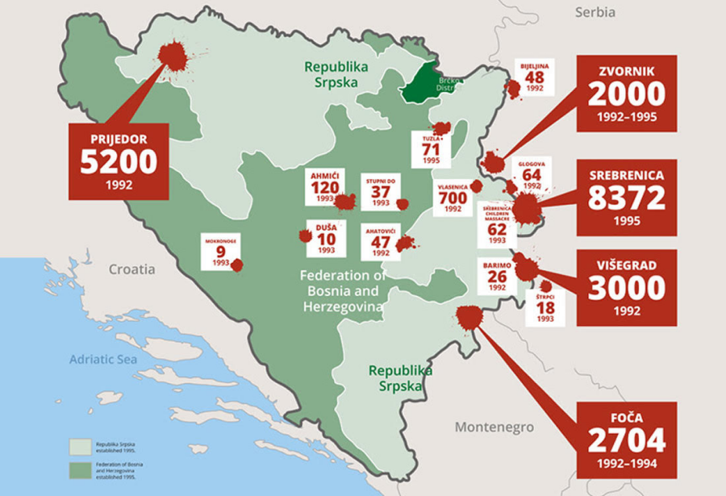
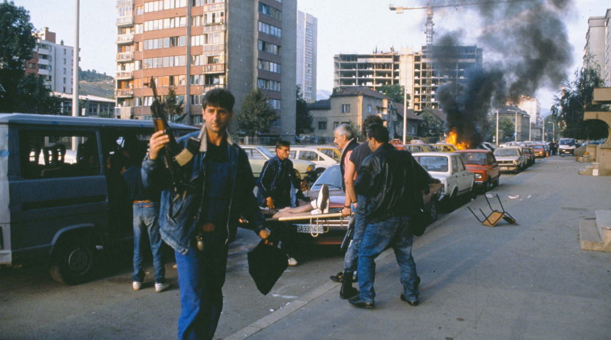
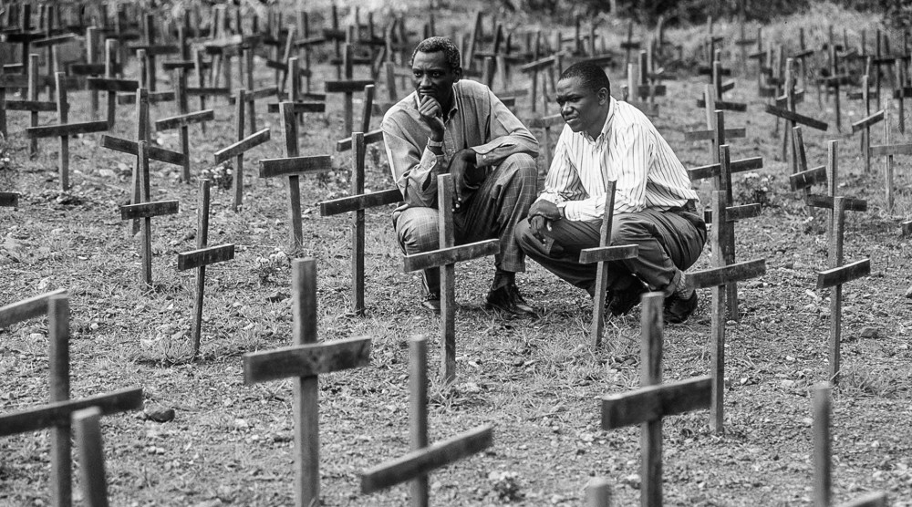
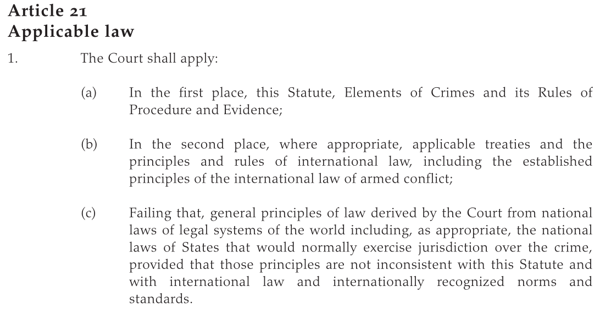
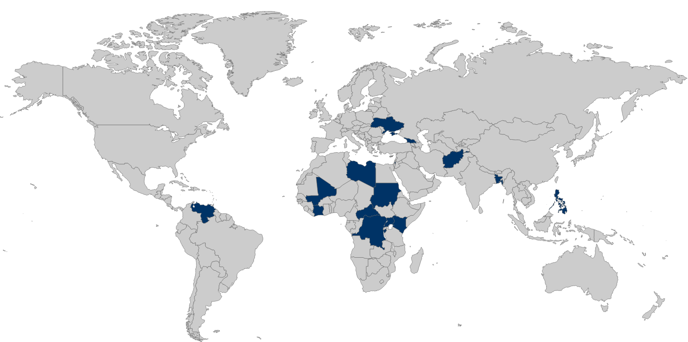
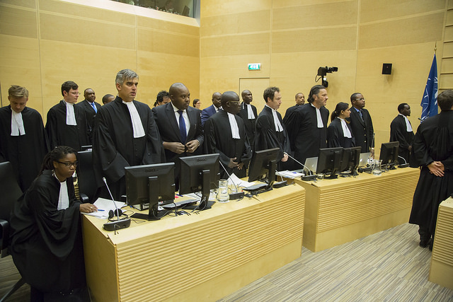
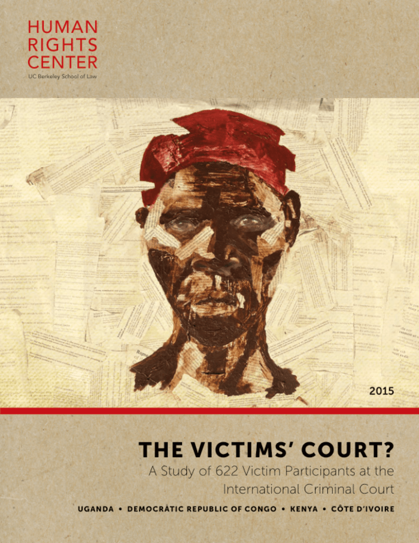
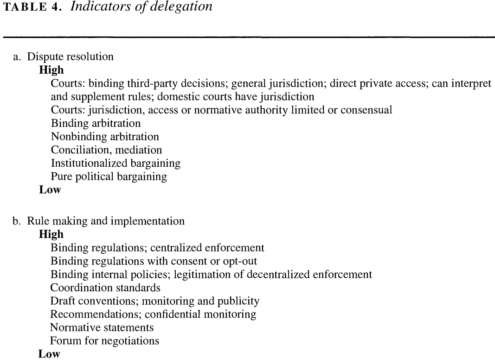

II. International Institutions for Mutual Restraint
Design Analysis
The International Criminal Court (ICC) and the Rome Statute (1998)
Justin Leinaweaver (Fall 2026)
[International Institutions for Mutual Restraint]
Rome Statute of the International Criminal Court (1998)
Article 1: The Court
An International Criminal Court (‘the Court’) is hereby established. It shall be a permanent institution and shall have the power to exercise its jurisdiction over persons for the most serious crimes of international concern, as referred to in this Statute, and shall be complementary to national criminal jurisdictions. The jurisdiction and functioning of the Court shall be governed by the provisions of this Statute.
Rome Statute of the International Criminal Court (1998)
Article 1: The Court
An International Criminal Court (‘the Court’) is hereby established. It shall be a permanent institution and shall have the power to exercise its jurisdiction over persons for the most serious crimes of international concern, as referred to in this Statute, and shall be complementary to national criminal jurisdictions. The jurisdiction and functioning of the Court shall be governed by the provisions of this Statute.



[Rome Statute of the International Criminal Court (1998)]
Article 1: The Court
An International Criminal Court (‘the Court’) is hereby established. It shall be a permanent institution and shall have the power to exercise its jurisdiction over persons for the most serious crimes of international concern, as referred to in this Statute, and shall be complementary to national criminal jurisdictions. The jurisdiction and functioning of the Court shall be governed by the provisions of this Statute.
[PA Theory: Why Delegate?]
“Delegation is a conditional grant of authority from a principal to an agent that empowers the latter to act on behalf of the former” (Hawkins et al 2006, 4).
Always governed by a contract
Limited in time or scope
Must be revocable
Roles are mutually constitutive
[Rome Statute of the International Criminal Court (1998)]
Article 1: The Court
An International Criminal Court (‘the Court’) is hereby established. It shall be a permanent institution and shall have the power to exercise its jurisdiction over persons for the most serious crimes of international concern, as referred to in this Statute, and shall be complementary to national criminal jurisdictions. The jurisdiction and functioning of the Court shall be governed by the provisions of this Statute.
[Rome Statute of the International Criminal Court (1998)]
Article 1: The Court
An International Criminal Court (‘the Court’) is hereby established. It shall be a permanent institution and shall have the power to exercise its jurisdiction over persons for the most serious crimes of international concern, as referred to in this Statute, and shall be complementary to national criminal jurisdictions. The jurisdiction and functioning of the Court shall be governed by the provisions of this Statute.
[Rome Statute of the International Criminal Court (1998)]
Article 1: The Court
An International Criminal Court (‘the Court’) is hereby established. It shall be a permanent institution and shall have the power to exercise its jurisdiction over persons for the most serious crimes of international concern, as referred to in this Statute, and shall be complementary to national criminal jurisdictions. The jurisdiction and functioning of the Court shall be governed by the provisions of this Statute.

[Princpal-Agent Theory]
Elements of Delegation: Always governed by a contract, limited in time or scope, must be revocable and the roles are mutually constitutive
Benefits of Delegation: Divide the labor & create gains from specialization, Managing policy externalities, Facilitating collective decision-making, Resolving disputes, Enhancing credibility, Creating policy bias
Control Mechanisms: Rules vs Discretion, Monitoring and Reporting Requirements, Screening and Selection Procedures, Institutional Checks and Balances, Sanctions
[Group 1: Referrals, analyses and investigations]

[Group 2: Arrests and the rights of suspects]

[Group 3: ICC Trials]
Group 4
Victims’ Participation

[Treaty Design Analysis: The Rome Statute (1998)]
Group 1) How effectively can states delay / obstruct an investigation they do not want? (Art. 86-102)
Group 2) How does the ICC prosecutor decide to investigate? (Art. 53-61)
Group 3) How does enforcement work? (Art 103-111)
Group 4) Who are the judges? How autonomous are they? (Art 34-52)

For Next Class
Hillebrecht (2016) “The Deterrent Effects of the International Criminal Court: Evidence from Libya”
Hillebrecht & Straus (2017) “Who Pursues the Perpetrators? State Cooperation with the ICC”